28Watt 现有界面汇总28Watt current UI: what's visible
截图日期 2026-10-14。只截了公开页面，没有提交任何表单，也没有注册账号。Captured 2026-10-14 from public pages only. No forms submitted, no accounts created. 真实界面Live UI 官网宣传图Marketing mock 旧版 · 2025Old · 2025 · ← 流程图← Flow ·
目前没有找到 iOS 或 Android App。所有产品都是 Web（Next.js），手机端是响应式网页。No iOS/Android app found. Everything is web (Next.js), with responsive mobile pages.
1. 业主端：申请入口1. Homeowner: application entry 真实界面Live UI
业主看到的第一屏就是上传报价：粘贴报价链接，或上传 PDF。没填任何内容时，“Get my rate” 按钮是灰的，也不提示缺什么。上传之后会弹出申请流程的弹窗（QuoteFlowModal，带步骤侧栏），但要真的提交报价才看得到，所以这一段没有截图。The first screen asks for a quote: paste a link or upload a PDF. “Get my rate” stays disabled until something is entered, with no hint why. After upload, an application modal (QuoteFlowModal with a step sidebar) opens, but it only appears after a real submission, so it isn't captured here.
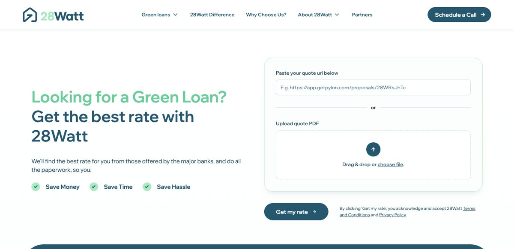
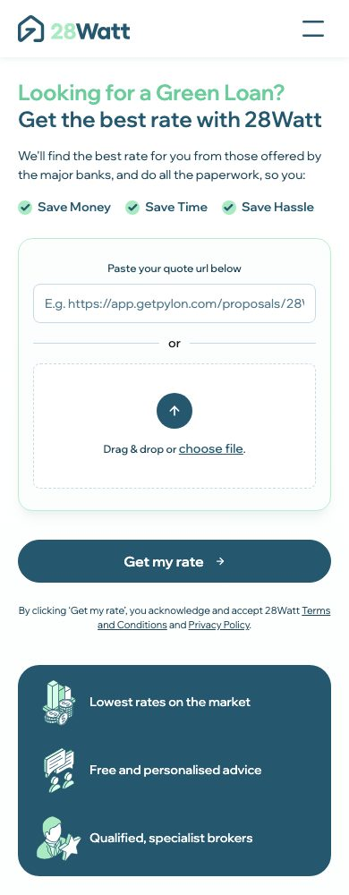
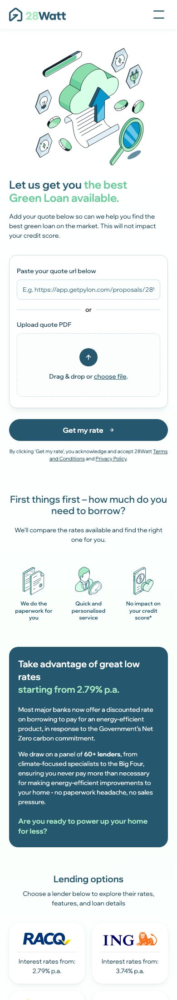
2. 安装商端：注册和登录2. Installer: sign-up & login 真实界面Live UI
注册分 3 步：联系方式 → 公司资料（ABN 等）→ 邮箱验证，左侧是步骤条。必须用公司邮箱。提交后由 partnerships team 人工审核。3-step sign-up with a left step rail: Contact details → Company profile (ABN etc.) → Verify email. Company email required. Accounts are reviewed manually by the partnerships team.
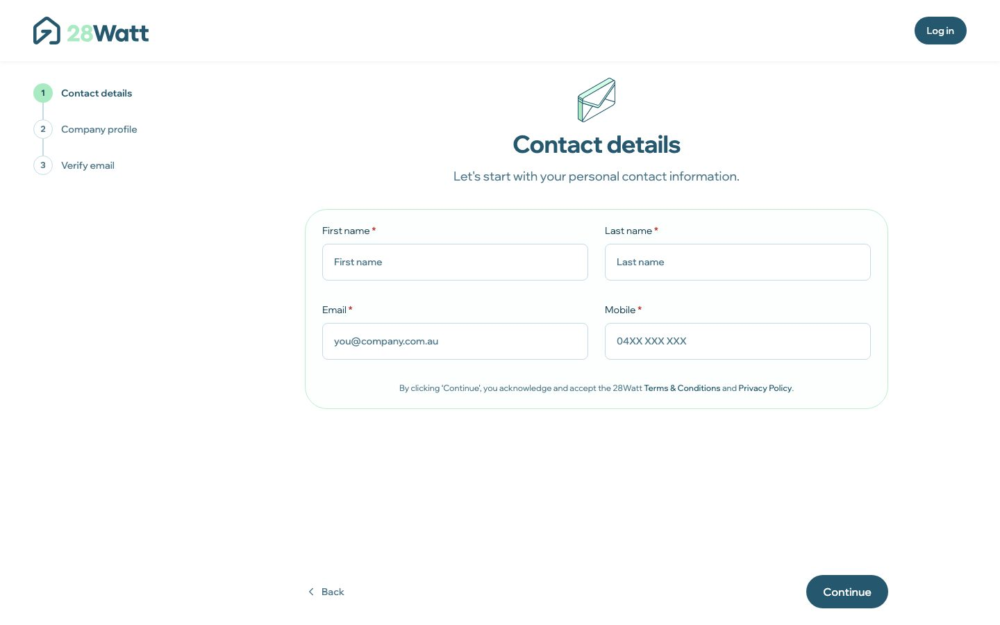
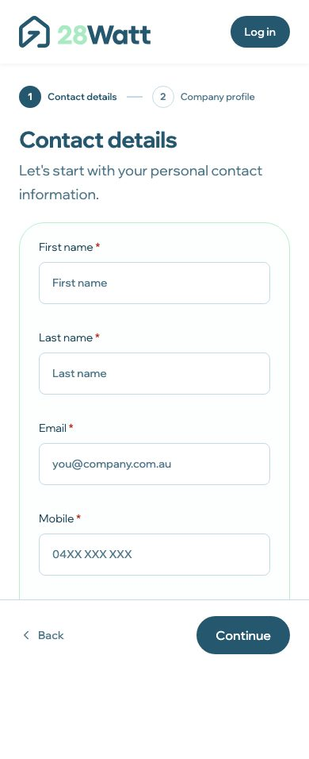
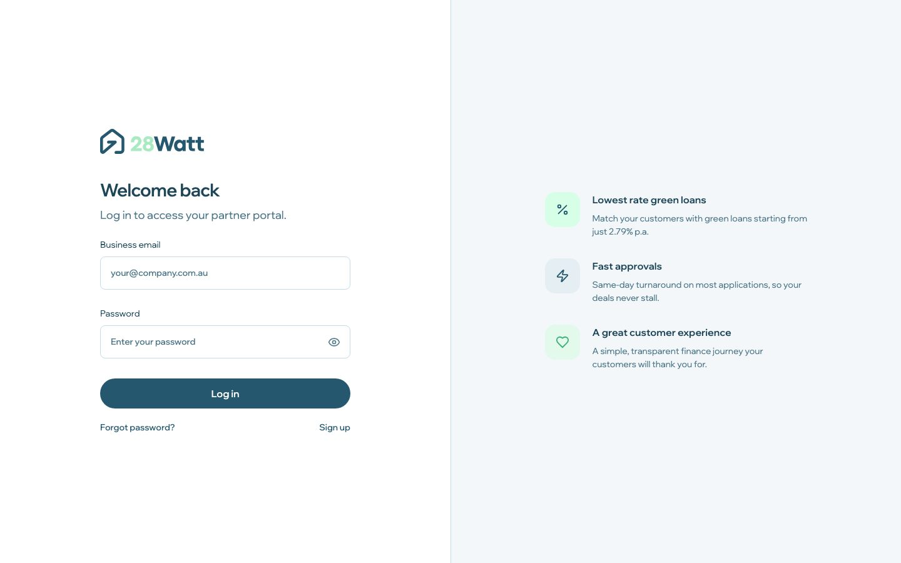
3. 安装商端：portal 里面3. Installer: inside the portal 官网宣传图Marketing mock
下面 3 张图来自 /partners 宣传页，看起来像真实界面的高保真截图，但没有登录无法确认。可以看出 portal 现在的结构：These three images come from the /partners marketing page. They look like high-fidelity product screens, but this can't be confirmed without logging in. They show the current portal structure:
- Alerts 收件箱：已批准、需要处理（例如“James Walsh 在等安装证明”）、客户消息、利率变化提示（“CommBank 绿色贷款降到 6.74%，比你 3 个待处理 deal 的默认方案更好”）、佣金到账。Alerts inbox: approvals, action needed (e.g. “James Walsh is waiting on a proof-of-install document”), customer messages, rate tips (“CommBank dropped their Green Loan to 6.74%, better than your current default on 3 pending deals”), commission paid.
- 新发现：安装商自己也有佣金。示例写着“Commission paid $192 … cleared to ANZ”，说明安装商推荐客户可以拿到返佣，这是他们用 portal 的一大动力。New finding: installers earn commission too. The example reads “Commission paid $192 … cleared to ANZ”, so installers get paid for referrals, which is a key motivation for using the portal.
- 设置：个人信息、收款账户、资质文件、安装的产品，以及仅管理员可见的公司信息、银行账户、NETCC 认证、团队成员和邀请。Settings: personal and payout details, accreditation docs, products installed, plus admin-only company details, bank details, NETCC accreditation, team members and invites.
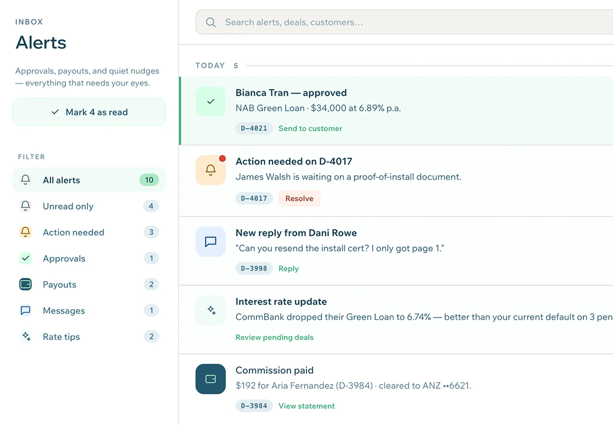
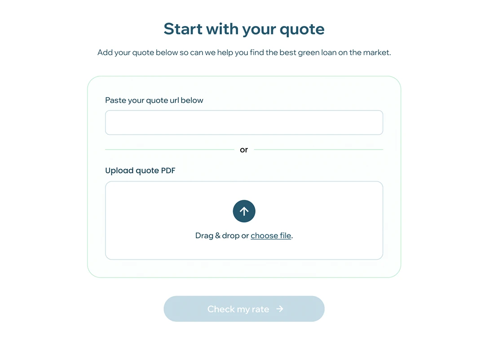
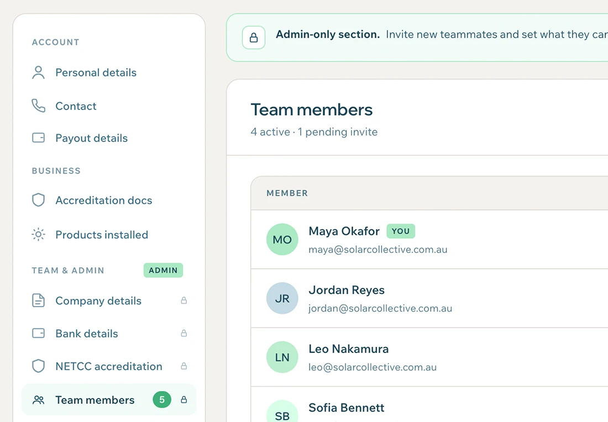
4. 第三方报价软件里的入口4. Entry points inside quoting tools
很多申请其实从 28Watt 自己的界面以外开始：Many applications start outside 28Watt's own UI:
- Pylon（2026 年 3 月上线）：安装商可以在方案里直接提供 28Watt 贷款，自带期限、利率和月供计算。Pylon (live March 2026): installers can offer 28Watt finance inside proposals, with terms, rates and repayment calculations.
- OpenSolar：28Watt 出现在 Checkout Financing 的贷款机构列表里；报价单上有 “28Watt” 按钮，链接带 token。OpenSolar: listed in Checkout Financing lenders; the quote carries a “28Watt” button with a tokenised link.
- GreenSketch（2025 年 12 月上线）。GreenSketch (live December 2025).
对设计的影响：业主从别人的界面跳转到 28Watt，这个交接页要先让人觉得可信、和刚才看到的报价是连上的。Design implication: the homeowner jumps from someone else's UI into 28Watt, so the landing step must feel trustworthy and clearly connected to the quote they just saw.
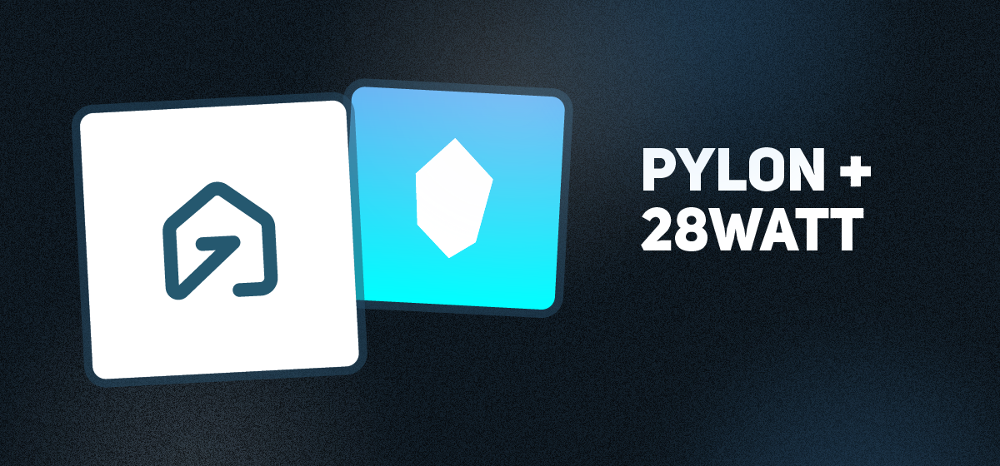
5. 旧版：Tonic 品牌升级和节能计算器5. Old version: Tonic rebrand & savings calculator 旧版 · 2025Old · 2025
这是 2025 年 Tonic 做的版本：定位是“免费家庭能效评估”，先填房屋信息，再看每年能省多少钱、推荐哪些升级。现在的产品已经转向“报价优先、贷款优先”，但视觉语言是延续下来的：This is Tonic's 2025 work: positioned as a “free home energy assessment” where you enter home details and see annual savings and recommended upgrades. The product has since pivoted to quote-first, finance-first, but the visual language carried over:
- 颜色：Deep Teal（现在网页标题色是 rgb(37,87,110)）、Soft Mint Green、Soft Cream、Dark Grey、Light GreyColours: Deep Teal (live heading colour rgb(37,87,110)), Soft Mint Green, Soft Cream, Dark Grey, Light Grey
- 字体：正文用 Poppins；现在的标题已经换成 Wix Madefor Display，说明品牌一直在演变，正需要一套设计系统来统一。Type: Poppins for body; live headings now use Wix Madefor Display. The brand has drifted, which is exactly why a design system is needed.
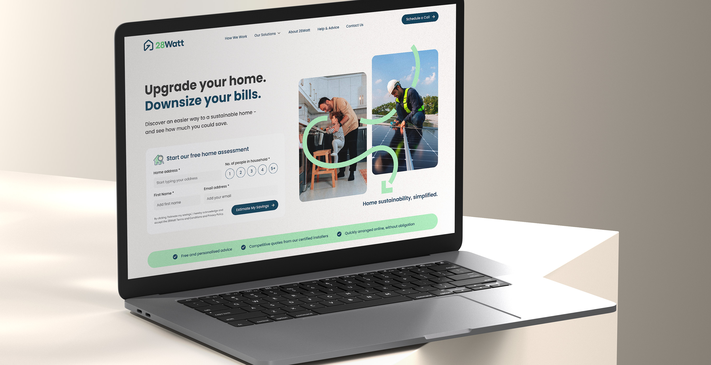
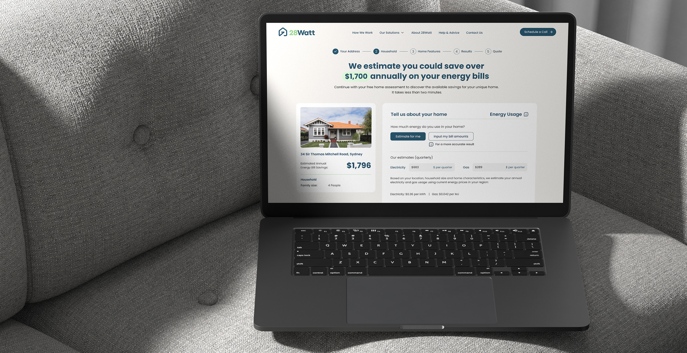
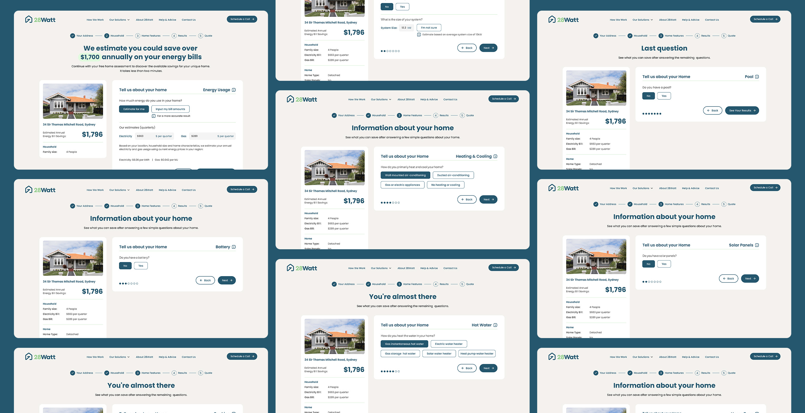
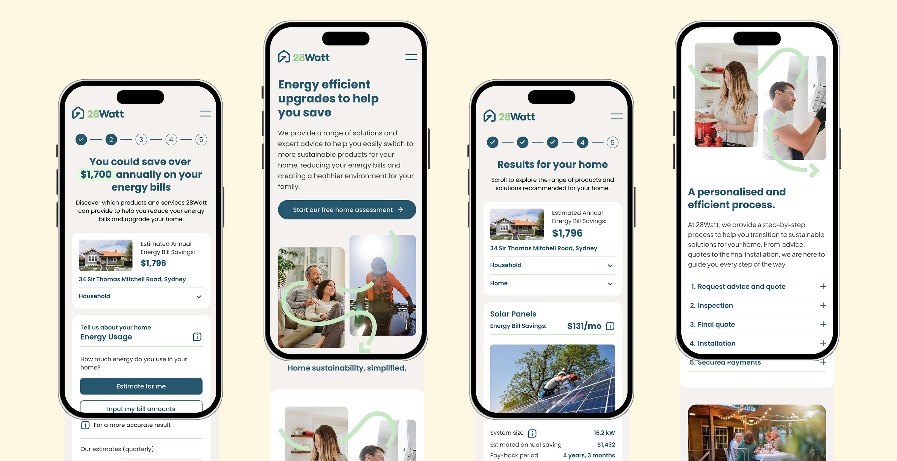
来源：Source: thatiferreira.com · tonic.com.au
6. 看不到的部分，以及怎么补6. What can't be seen, and how to fill the gap
| 界面Screen | 为什么看不到Why not visible | 怎么办How to get it |
|---|---|---|
| 上传报价后的申请流程（AI 读取、联系方式、基本资料、方案对比、补材料）Post-upload application (AI read, contact, basics, offers, documents) | 要提交真实报价，会在他们系统里生成一条假的客户线索Requires submitting a real quote, which would create a fake lead in their system | 面试时请 Jake 现场演示，或问能不能给一个测试账号Ask Jake for a live walkthrough or a test account in the interview |
| Portal 登录后的真实界面Real portal after login | 要有通过审核的安装商账号Requires an approved installer account | 同上；宣传图已经能看出大致结构Same; marketing images already show the structure |
| Pylon、OpenSolar 里的 28Watt 按钮28Watt button in Pylon / OpenSolar | 要有这两个软件的安装商账号Requires installer accounts on those tools | 面试时问：有多少申请是从集成入口进来的？Ask: what share of applications come via integrations? |